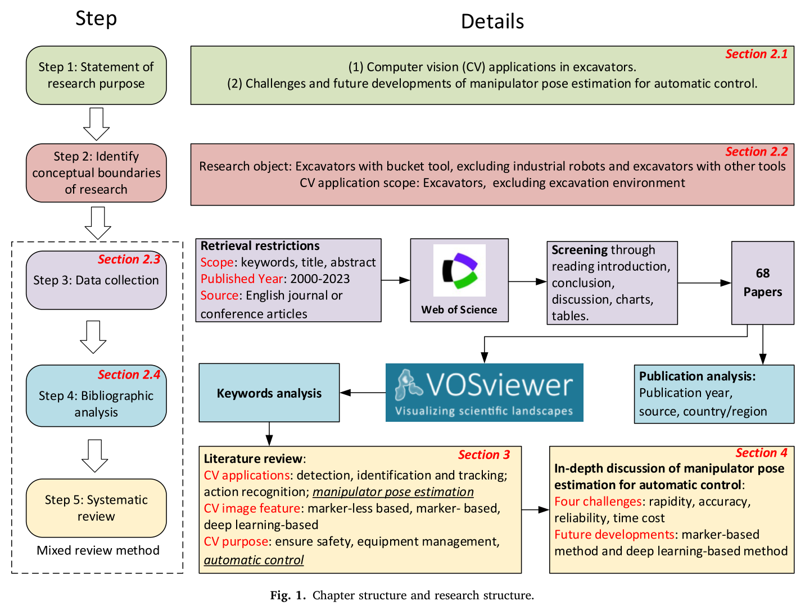
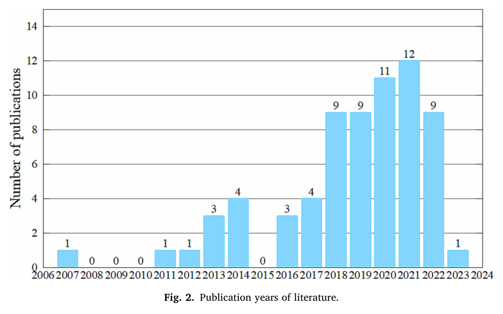
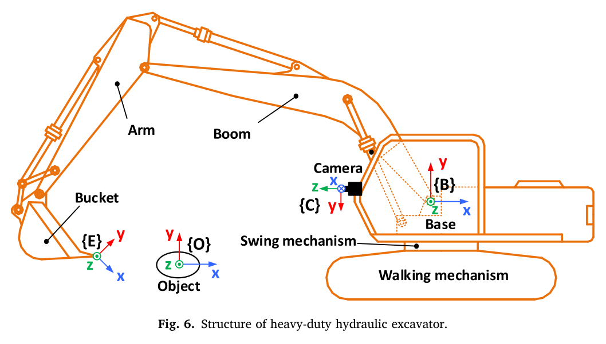

VISION × EXCAVATOR CONTROL
굴착기는 카메라만으로
팔을 제어할 수 있을까?
굴착기 비전 연구 68편 가운데 팔 자세를 제어 피드백으로 사용한 연구는 4편이었다. ‘보는 기술’이 ‘제어하는 기술’이 되려면 무엇이 더 필요할까. 마커와 딥러닝의 성과를 속도·정확도·신뢰성·비용의 관점에서 읽는다.
제어 관점에서 다시 읽은 비전 자세 추정
Liu 외 연구진은 Web of Science에서 수집한 굴착기 컴퓨터 비전 논문 68편을 계량·정성 분석했다. 안전 감시와 생산성 분석에 비해 자동 제어를 위한 자세 피드백 연구는 적었다. 리뷰의 방향은 명확하다. 당시의 제어 적용에는 빠르고 정확한 마커 기반 방법이 유리하며, 딥러닝은 출력의 물리적 해석과 처리 속도, 데이터 구축 문제를 해결해야 할 장기 연구 방향이다.
제어 피드백으로 사용한 연구
마커 기반 3편 · 시뮬레이션 신경망 1편
자세를 알아보는 것과 제어하는 것 사이
굴착기 팔을 원하는 궤적으로 움직이려면 현재 자세를 실시간으로 알아야 한다. IMU나 실린더 변위계 같은 접촉식 센서는 이 역할을 맡지만, 진동·충격에 대한 대응과 설치·유지 비용이 따른다. 비전은 비접촉 방식이고 설치가 비교적 쉽다는 점에서 매력적인 대안이다.
그러나 작업 현장에서 굴착기를 검출하거나 동작을 분류하는 데 충분한 영상 정보가 곧바로 제어에 충분한 것은 아니다. 이 리뷰의 기여는 기존 연구를 “자동 제어의 피드백으로 쓸 수 있는가”라는 질문으로 재정렬한 데 있다.
-
연구의 다수는 감시와 분석에 머물렀다.
검토한 68편 중 자세를 제어 피드백으로 사용한 연구는 4편이었다. 이는 해당 문헌 집합에서 제어 적용의 근거가 제한적이었음을 보여준다.
-
마커 기반 방법은 제어에 가까운 성능을 보였다.
개별 연구에서 약 1° 수준의 각도 오차나 2.5–3 cm 수준의 말단 위치 오차가 보고됐다. 다만 서로 다른 실험의 결과이므로 하나의 성능 사양처럼 합쳐 읽어서는 안 된다.
-
딥러닝의 핵심 과제는 물리량으로의 연결이다.
영상 키포인트를 찾은 뒤 관절각이나 말단 위치로 변환해야 한다. 처리 속도와 데이터 의존성까지 해결해야 제어 루프에 들어갈 수 있다.
68편이 그리는 연구 지형
리뷰는 목적과 경계를 설정한 뒤 문헌을 수집하고, 178편에서 96편, 최종 68편으로 대상을 좁혔다. 이후 발표 동향과 연구 주제를 계량 분석하고 방법별 성과를 검토했다.

굴착기 비전의 응용은 크게 검출·식별·추적, 동작 인식, 자세 추정으로 나뉜다. 접근법은 기체 자체의 특징을 이용하는 마커 없는 방법, 부착 마커를 쓰는 방법, 딥러닝 기반 방법으로 정리된다. 노트는 특히 2018년 이후 딥러닝과 함께 연구가 빠르게 늘어난 흐름에 주목한다.

| 분석 항목 | 주요 결과 |
|---|---|
| 학술지 | Automation in Construction 32%, Journal of Computing in Civil Engineering 15% — 두 학술지가 47% |
| 국가 | 중국 26% · 미국 24% · 한국 22% · 캐나다 13% |
| 키워드 | 추적·동작 인식·식별·자세 추정 / 특징·딥러닝 / 생산성·안전·자동화 |
성능 수치는 무엇을 말해 주는가
초기에는 자작 마커가 사용됐고, 2015–2018년에는 AprilTag가, 2018년 이후에는 딥러닝이 주요 흐름으로 등장했다. 아래 표는 제공된 노트의 원 논문 표 4 요약을 재구성한 것이다. 옅은 녹색 행은 제어 피드백에 사용된 네 연구를 표시한다.
| 방법 · 대표 연구 | 실험 환경 | 보고된 결과 |
|---|---|---|
| 색 마커 · Wang 2011 | 실차 | 노트에 수치 미기재 |
| 새들 포인트 마커 · Wang 2014 제어 피드백 | 실차, 캐빈 적외선 카메라 | 관절각 오차가 “매우 작음”으로 요약됨 |
| AprilTag · 2015 | 실내 모형, 원격 조작 | 정적 0.5° · 동적 1° |
| AprilTag · 2016 | 실차, 캐빈 카메라 3대 | 버킷 끝 3축 오차 3 cm 이내 |
| AprilTag · 2018 | 실차, 캐빈 카메라 2대 | 투스 끝 수직 오차 2.54 cm |
| 윤곽 + 템플릿 · 2017 | 실차, 캠코더 2대 | z 오차 ±1 m 이내 비율 70% · 감시용 |
| 윤곽 기반 · 2018 | 실차, 감시 카메라 4대 | 각도 평균 오차 2.9° · 4.2° |
| 신경망 · 2019 제어 피드백 | 시뮬레이션 | 실린더 변위 오차 ±0.3–1.9 cm |
| Stacked hourglass · 2019 | 데이터셋 | 노드 오차 37–64 mm |
| 색 마커 · Ma 2020 제어 피드백 | 실차, 지상 카메라 | 정적 마커 오차 30 mm 이내 |
| CNN · 2021 | 실차, 스마트폰 | 평균 자세 오차 9.63° |
| HRNet / YOLOv5-FastPose · 2022 | 데이터셋 | 정규화 오차 0.013–0.05 |
| 색 마커 · 2022 제어 피드백 | 실차, 캐빈 카메라 | 관절각 오차 ±1° |
| ArUco · 2023 | 실차, 스마트폰 2대 | RMSE 120 mm |
각도 오차, 위치 오차, 정규화 오차는 직접 비교할 수 없다. 정적·동적 조건, 축별 오차와 전체 오차, 실차·모형·데이터셋·시뮬레이션의 차이도 함께 읽어야 한다. 개별 연구의 상세 서지와 측정 정의는 원 논문에서 확인할 수 있다.
영상에서 잘 찾는 것만으로는 부족하다.
제어기는 지금의 관절각과 말단 위치를 필요로 한다.
자동 제어를 위한 네 가지 조건
굴착기의 카메라는 대개 팔 바깥의 캐빈이나 지상에 놓인다. 팔은 축들이 평행한 평면 기구이며, 선회와 주행으로 작업 위치가 바뀐다. 이 구조에서는 카메라가 본 정보를 굴착기 기준의 물리량으로 옮기는 과정이 중요하다.

속도 — 제어 주기를 따라가는가
리뷰는 접촉식 센서의 수백–수천 Hz와 비전의 처리 속도 차이를 짚는다. 비전 연구에는 프레임당 2–4초가 걸리는 사례도 있었고, AprilTag는 640×480 해상도에서 20 Hz 사례가 있었다.
리뷰 당시에는 마커가 유리했다. 처리 속도 수치는 해상도·알고리즘·장비 조건에 종속된다.
정확도 — 오차가 어디서 생기는가
평균 자세 오차 9.63°인 사례는 감시와 제어의 요구가 다름을 보여준다. 오차는 검출뿐 아니라 투영·동차 변환 모델, 캘리브레이션, 세계 좌표 추정, 고속 동작의 블러에서도 생긴다.
대형 기체에서는 멀리 놓인 캘리브레이션 판이 문제를 키울 수 있다. 영상 검출과 물리 좌표 변환을 함께 평가해야 한다.
신뢰성 — 피드백이 계속 이어지는가
팔이 카메라 시야를 벗어나거나 다른 구조물에 가려지면 측정이 끊긴다. 버킷의 마커는 흙에 묻히거나 작업 중 손상될 수 있다.
평균 오차가 작아도 측정이 사라지는 구간이 있다면 제어에 적용하기 어렵다.
비용 — 현장에서 유지할 수 있는가
지상 카메라는 위치가 바뀔 때 재캘리브레이션이 필요하다. 딥러닝에는 기체·카메라·설치 위치에 맞는 데이터 구축 부담이 따른다.
카메라 가격뿐 아니라 설치, 보정, 데이터 준비, 유지에 드는 시간을 포함해 판단해야 한다.
마커는 현장성을, 딥러닝은 제어 연결을
마커 기반: 정확한 측정을 오래 유지하는 방향
마커 방식의 과제는 잘 보일 때의 성능을 실제 작업 조건에서도 유지하는 것이다. 리뷰는 시야 확보, 특징의 강인성, 좌표 변환의 정밀도를 함께 개선할 것을 제안한다.
- 가림과 오염 대응. 캐빈의 다중 카메라나 광각 카메라로 시야를 넓히고, 칼만·입자 필터로 짧은 가림을 보간한다. 광각에는 왜곡 모델이 필요하다. 흙이 덜 붙는 마커 재질과 회전 공구의 다중 마커도 검토 대상이다.
- 특징의 결합. 기하·색·질감 정보를 함께 활용해 조명, 연기, 먼지의 영향을 줄인다.
- 좌표 변환 개선. 신경망 적합을 이용한 모델 독립적 오프라인 보정, 정밀한 핀홀·왜곡 모델, 지능 최적화 등을 연구 방향으로 제시한다.
딥러닝: 이미지와 관절각 사이의 두 경로
딥러닝의 경로는 물리량을 직접 추정하는 방식과, 키포인트 검출 뒤 기하학적으로 변환하는 방식으로 나뉜다. 두 방식은 보정 부담과 데이터 의존성을 서로 다르게 나눠 가진다.
명시적인 기하 캘리브레이션 없이 직접 추정하는 접근이다. 다만 카메라가 움직이면 기존 데이터셋과 학습 관계가 더 이상 유효하지 않을 수 있다.
정확한 좌표 변환과 캘리브레이션이 필요하다. 소수 키포인트의 오차 민감도를 줄이기 위해 CAD 렌더링으로 픽셀별 3D 좌표를 주석화하고 다점을 사용하는 방향이 제안된다.
모델 구조에서는 Swin Transformer와 RNN·시간 네트워크를 활용한 다중 프레임 융합을, 데이터 측면에서는 배경·조명·가림·먼지를 반영한 증강을 제안한다. GPU·TPU 활용 역시 처리 속도 개선 방향에 포함된다. 이는 리뷰가 제시한 연구 전망이며, 이 글에서 검증한 구현 결과는 아니다.
HR35에서는 ‘독립된 두 번째 자’로
노트 작성자의 해석 / HR35 적용 관점
캐빈 카메라와 AprilTag를 검증 경로로 붙인다
노트에 따르면 3.5 t급 HR35는 경사계 3개를 사용하며, 기재된 사양은 0.01°·20 Hz다. 작성자는 비전의 우선 활용처를 주 센서 대체보다 경사계와 기구 모델을 점검하는 독립 측정 경로로 본다.
캐빈 카메라와 AprilTag로 버킷 끝 위치를 별도로 추정하면, 경사계 기반 결과와 비교해 영점이나 기구 길이 오차를 탐색할 수 있다는 구상이다. 이는 기구·센서 보정을 다루는 연구 축 D의 대조 측정 수단에 해당한다.
작은 기체에서는 대형 기체의 캘리브레이션 판 거리 문제가 상대적으로 완화될 가능성도 있다. 반면 기체와 설치 조건에 맞춘 데이터셋을 새로 구축해야 하는 딥러닝 자세 추정은 현재 구상에서 우선순위가 낮다.
비교의 전제: 노트의 0.01°가 분해능인지 정확도인지 명시돼 있지 않아, 문헌의 ±1° 추정 오차와 직접 비교해 우열을 확정할 수 없다. 또한 문헌의 2.5–3 cm 결과가 HR35에서도 재현되는지, 그 수준이 검증에 충분한지는 목표 허용 오차와 실험으로 확인해야 한다.
이 활용 방향의 가치는 측정 경로를 하나 더 확보하는 데 있다. 다만 두 경로가 같은 기구 치수나 보정 기준을 공유한다면 공통 오차가 남을 수 있다. 따라서 ‘독립된 측정’의 범위를 먼저 정하고 비교 결과를 해석하는 것이 필요하다.
실무에서는 무엇부터 확인할까
리뷰의 네 가지 요건을 적용 판단으로 바꾸면 다음 질문이 남는다. 아래 목록은 논문의 정량 기준이 아니라, 문헌을 바탕으로 구성한 검토 항목이다.
- 출력이 픽셀 좌표인지, 관절각·실린더 변위·말단 위치인지 분명한가?
- 목표 동작 속도에서 처리 주기와 지연을 확인했는가?
- 정적 조건뿐 아니라 동적 조건에서도 필요한 오차 범위를 만족하는가?
- 시야 이탈·가림·오염으로 측정이 끊기는 구간을 확인했는가?
- 카메라나 기체가 바뀔 때 필요한 재보정·데이터 구축 비용을 계산했는가?
당시의 실용 경로는 마커,
장기 연구 방향은 딥러닝.
2023년까지의 문헌을 다룬 이 리뷰에서 마커는 속도와 정확도 면에서 제어 적용에 가까웠다. 딥러닝은 더 유연한 인식을 향한 가능성이 있지만, 물리량 추정과 연속적인 피드백을 위한 과제가 남아 있었다.
HR35에서 시작할 지점은 구체적이다. 캐빈 카메라와 AprilTag로 별도의 측정 경로를 만들고, 기존 센서와의 차이가 언제·어디서 커지는지 확인하는 것이다. 그 비교가 쌓일 때 비전의 역할도 더 분명해진다.
출처와 해석 범위
Vision-based excavator pose estimation for automatic control
Guangxu Liu · Qingfeng Wang · Tao Wang · Bingcheng Li · Xiangshuo Xi
Zhejiang University, State Key Laboratory of Fluid Power and Mechatronic Systems
Automation in Construction, 157, 105162, 2024.
온라인 공개: 2023년 11월 · 리뷰 논문
- 이 글은 제공된 Obsidian 논문 요약 노트를 편집·재구성했다. 원문이나 개별 연구를 별도로 대조 검증한 결과는 아니며, 수치와 분류는 노트에 기재된 내용을 따른다.
- ‘68편 중 4편’은 이 리뷰의 검색·선별 범위에 해당한다. 현재의 전체 연구 수나 2026년 기술 수준을 나타내는 수치가 아니다.
- 노트의 연도 메타데이터 2023은 온라인 공개 시점에 해당하며, 학술지 권호는 2024년으로 기재돼 있다.
- 그림 1·2·6은 제공된 로컬 이미지로 보존했다. 그림의 출처는 위 원 논문이며, 번호도 원 논문 기준이다.
- HR35의 센서 사양, 적용 우선순위, 독립 검증 경로 구상은 노트 작성자의 의견이다. 성능 비교의 전제와 실무 검토 목록은 독자의 해석을 돕기 위해 명시했다.